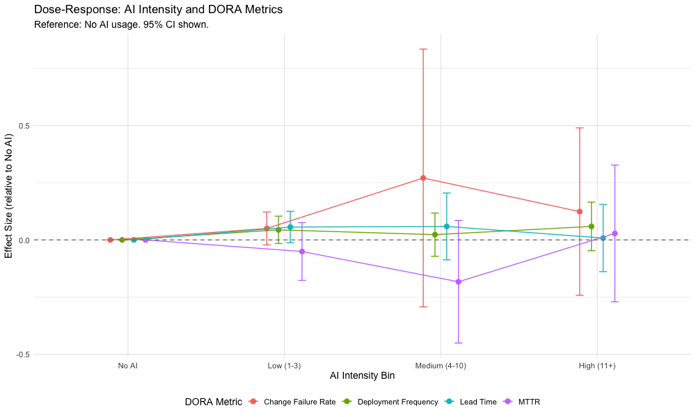
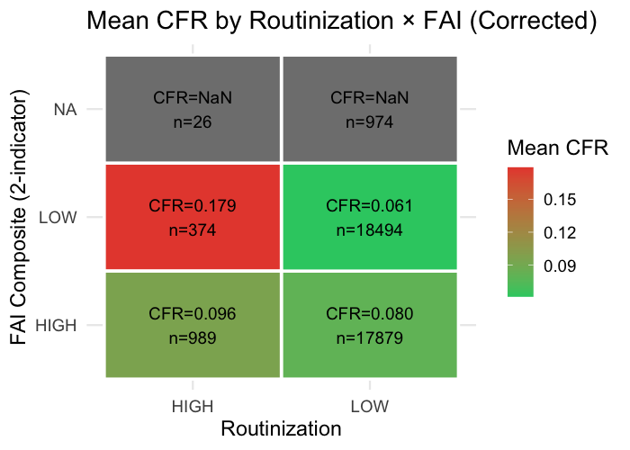

Panel evidence on routinization, faithful appropriation, and task–technology fit across 500 repositories and 1.3 million developer-months
The 2024 DORA Report documents a historical first: throughput and instability rising together. These contradictions are not noise — they are a signal that our theories lack the vocabulary for a generative, continuously evolving technology.
Research question. How does GenAI use affect software delivery performance, and under what conditions does the effect vary?
Asymmetric separation thesis: routinization dominantly predicts throughput; faithful appropriation dominantly predicts stability. Solid = confirmatory · dashed = exploratory.
Two-way fixed effects · Sun–Abraham & Callaway–Sant'Anna event studies · IV (lagged intensity) · propensity-score matching · 1,000-draw placebo (0% false positives) · R↔Stata replication to six decimals.

The quality gate works as theorized: gatekeeping catches defects before they ship.
Signals reactive debugging, not proactive refinement — developers iterate after problems surface.
The opposing components cancel in the composite (a classic suppression pattern). H2 is partially supported: review discipline operates as theorized, but the two-indicator FAI does not behave as a unitary construct.

Implication: teams with stronger task-routing governance capture agentic tools' advantage; looser teams may benefit more from assistive deployments.
Re-estimated within-developer (1.3M observations), the organizational story reverses:
Selection, composition, and cohort effects drive the divergence. Single-level designs cannot detect cross-level reconfiguration — multi-level estimation must become standard practice.
Operationalizes a 30-year-old AST construct from behavioral Git traces — at scale, continuously, without surveys.
Routinization and appropriation are distinct constructs (r = .087) with different dominant performance consequences.
Reconciles contradictory field evidence by restoring Goodhue & Thompson's task–technology–ability alignment.
Throughput-without-stability is specific to low task–technology fit — not a universal consequence of AI.
AI's impact on knowledge work is not a question of adoption — but of how human and machine capability are governed and made to coexist.
Routinization bends throughput in an inverted-U. Faithful appropriation splits into opposing mechanisms. Task–technology fit works directly. And the org-level story reverses within developers.